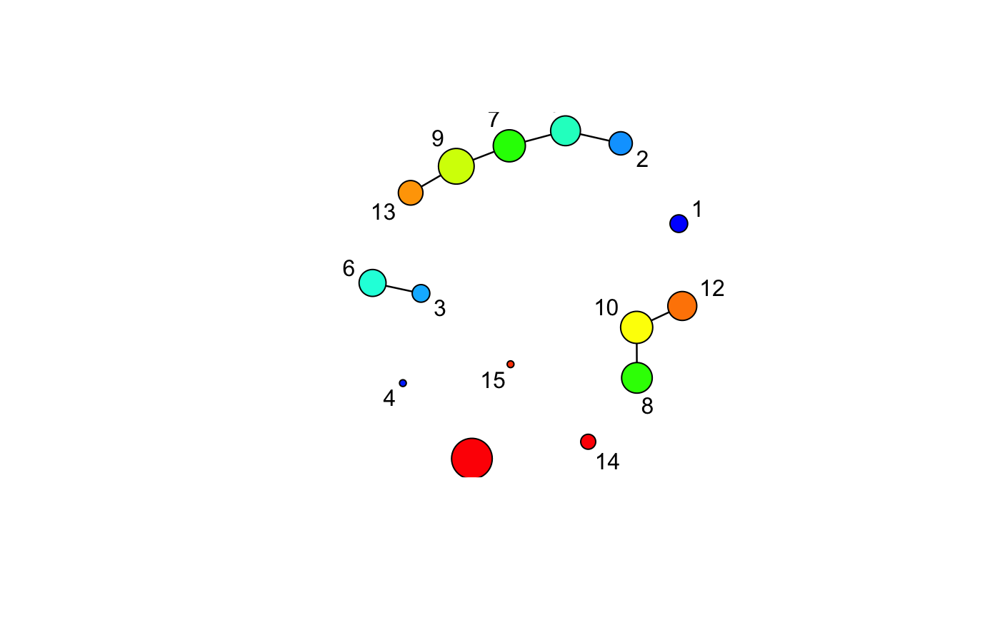
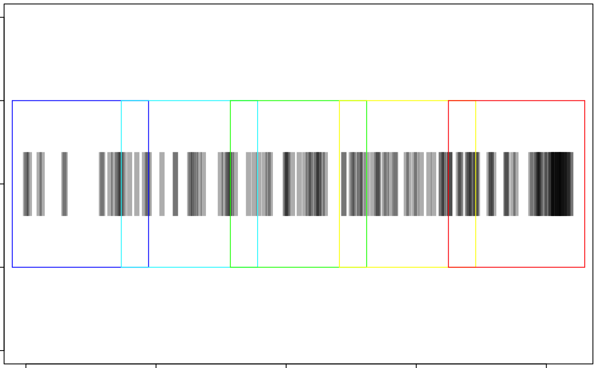

Using the Mapper package
Matt Piekenbrock
UsingMapper.RmdConsider a noisy sampling along the perimeter of a circle
## Generate noisy points around the perimeter of a circle
n <- 150
t <- 2*pi*runif(n)
r <- runif(n, min = 2, max = 2.1)
circ <- cbind(r*cos(t), r*sin(t))
## Define filter values equal to the distance from each point to the left-most point in the circle
left_pt <- circ[which.min(circ[, 1]),]
f_x <- sqrt(colSums(apply(circ, 1, function(pt) (pt - left_pt)^2)))
## Bin the data onto a sufficiently high-resolution rainbow gradient from blue (low) to red (high),
## and plot the original circle with these values
rbw_pal <- rev(rainbow(100, start = 0, end = 4/6))
binned_idx <- cut(f_x, breaks = 100, labels = F)
plot(circ, pch = 20, asp = 1, col = rbw_pal[binned_idx], xlab = "X", ylab = "Y", main = "Circle")
To get the mapper of this circle, first supply the data via the X parameter and the filtered values via the filter_values argument, e.g. mapper(X = circ, filter_values = f_x, ...). Mapper dispatches additional parameters passed in ... to other methods to further configure the construction. See ?mapper for more details. To use a primitive multidimensional, ‘hyper-rectangular’ cover, supply the number_intervals and overlap parameters. A summary is available with the default print method.
m <- Mapper::mapper(X = circ, filter_values = f_x, number_intervals = 5, overlap = 0.20)
m## Mapper object with filter function f: X^2 -> Z
## Configured with a fixed rectangular cover comprising 5 open sets
## The 1-skeleton contains 15 nodes and 7 edges
##
## Call: Mapper::mapper(X = circ, filter_values = f_x, number_intervals = 5, overlap = 0.2)By default, the core information of the \(1\)-skeleton of the Mapper construction is returned, including: 1. The nodes of the topological graph, and the indices of the points contained within each node. 2. The adjacency matrix of the topological graph. 3. The level sets indexing information, and the indices of the nodes they contain in each level set. This is, generally, all one needs to analyze the Mapper construction.
Internally, Mapper uses ReferenceClasses to efficiently compute the simplicial complex. If more information is required beyond the static construction, the return_reference parameter may be set to TRUE to access the underlying MapperRef object. This is useful in situations where each step of the mapper framework needs fine-tuned, e.g. where the construction is requested under multiple parameter settings.
m_ref <- Mapper::mapper(X = circ, filter_values = f_x, number_intervals = 5, overlap = 0.20, return_reference = TRUE)
m_ref## Mapper construction for 150 objects
## Cover: (type = Fixed rectangular, number intervals = [5], overlap = [0.2])There are many internal methods which may be called at any time to reconfigure the Mapper object.
ls(m_ref)## [1] "clustering_algorithm" "computeEdges"
## [3] "computeLevelSetDist" "computeNodes"
## [5] "config" "cover"
## [7] "G" "setClusteringAlgorithm"
## [9] "setCover" "show"
## [11] "X"ls(m_ref$cover)## [1] "constructCover" "filter_values" "index_set"
## [4] "initialize" "initialize#Cover" "level_sets"
## [7] "number_intervals" "overlap" "setOverlap"
## [10] "setResolution" "summary" "type"
## [13] "valid_pairs"Keep in mind that to keep the reference object around, copies of the original data and filter values are stored internally. Thus, the reference object takes up significantly more memory than the bare components.
suppressMessages(library("pryr", quietly = TRUE))## Warning: package 'pryr' was built under R version 3.4.3pryr::object_size(m)## 6.02 kBpryr::object_size(m_ref)## 1.28 MBIf the dimensionality is low enough, there’s default methods to plot the network or look at the filter space:
m_ref$plotNetwork()
m_ref$cover$plotFilterSpace()
The Mapper packages provides a force-directed htmlwidget implementation of Ayasdi’s open source grapher library, which can be used to visualize the Mapper network.
library("grapher")
g <- grapher::grapher(m_ref)
gA simple interface class grapher is provided to programmatically interact with the widget. The methods can be printed as follows:
library(printr)
help(package = "grapher")## Information on package 'grapher'
##
## Description:
##
## Package: grapher
## Type: Package
## Title: Create interactive network visualizations with
## Grapher
## Version: 1.0
## Date: 2018-07-04
## Author: Matt Piekenbrock
## Maintainer: Matt Piekenbrock <matt.piekenbrock@gmail.com>
## Description: Based on the 'grapher.js' library by Ayasdi,
## 'grapher' provides an extensive API for
## visualizing and interacting with
## WebGL-accelerated force-directed graphs.
## Provides additional support for the 'Mapper'
## package.
## Encoding: UTF-8
## VignetteBuilder: knitr
## Imports: htmltools (>= 0.2.6), htmlwidgets (>= 0.6),
## jsonlite, magrittr, methods, rmarkdown, shiny,
## igraph
## RoxygenNote: 6.0.1
## License: GPL-v3
## Built: R 3.4.2; ; 2018-07-19 02:52:29 UTC; unix
## RemoteType: github
## RemoteHost: https://api.github.com
## RemoteRepo: grapher
## RemoteUsername: peekxc
## RemoteRef: master
## RemoteSha: 8ffce0976ad26a2d884cb1e316abcb5f1b879c5f
## GithubRepo: grapher
## GithubUsername: peekxc
## GithubRef: master
## GithubSHA1: 8ffce0976ad26a2d884cb1e316abcb5f1b879c5f
##
## Index:
##
## %>% Chain API calls with an htmlwidget.
## addEdges Add selected edges.
## getDefaultJsonConfig Creates a default JSON configuration
## grapher Grapher
## groupSingletons Group singletons.
## logNetwork Logs the network to the rendering console.
## Useful for debugging.
## removeEdges Remove selected edges.
## removeNodes Remove selected nodes.
## splitByLabel Splits nodes by a given labeling
## updateEdgeColor Update the edge colors.
## updateNetwork Update the network.
## updateNodeColor Update the node colors.
## updateNodeSize Update the node sizes.The grapher instance is fully shiny-compatible. For larger datasets An interactive dashbaord is included to help analyze the Mapper.
# ## Load FICO heloc data set
# fico <- data.table::data.table(readr::read_csv("~/WaCS/TDA/heloc_dataset_v1.csv"))
# normalize <- function(x){ (x - min(x))/(max(x) - min(x)) }
# fico_x <- fico[, -1, with = FALSE]
# fico_x <- apply(as.matrix(fico_x), 2, normalize)
#
# ## Do very basic LDA on Risk Performance
# fico_lda <- MASS::lda(x = fico_x, grouping = fico$RiskPerformance, prior = c(0.50, 0.50)) # everybody deserves an equal chance
# f_x <- as.matrix(fico_x) %*% fico_lda$scaling ## Binary classification == 1D subspace
# fico_m <- Mapper::mapper(fico_x, filter_values = f_x, number_intervals = 50L, overlap = 1/3, return_reference = TRUE)
# Mapper::dashboard(fico_m, X = fico, node_color_f = "default")